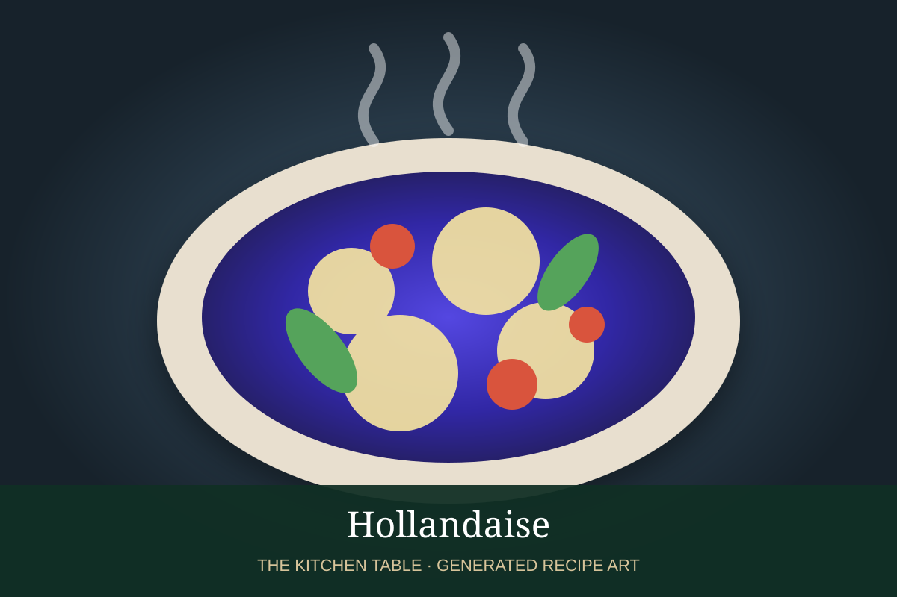

← French Mother Sauces
SAUCE · FRENCH MOTHER SAUCE
Hollandaise
A warm emulsion of egg yolks, clarified butter, and lemon juice: rich, glossy, and delicately tangy.
15 minMakes about 1½ cups

Photo: Küchengötter
Ingredients
- 3 large egg yolks
- 1 tbsp cold water
- 1 tbsp lemon juice
- 10 tbsp warm clarified butter
- Pinch cayenne or white pepper
- Kosher salt
Preparation
- Whisk yolks, water, and lemon juice until slightly thickened.
- Whisk over barely simmering water until pale and thick.
- Slowly drizzle in warm clarified butter while whisking.
- Season with salt, cayenne, and more lemon to taste.
- Keep warm—not hot—and serve promptly.
Hollandaise Daughter Sauces
- Béarnaise — shallot, tarragon, chervil →
- Choron — Béarnaise with tomato →
- Foyot — Béarnaise with meat glaze →
- Mousseline — Hollandaise with whipped cream →
- Maltaise — Hollandaise with blood orange →
- Dijon — Hollandaise with Dijon mustard →
- Noisette — Hollandaise with browned butter →